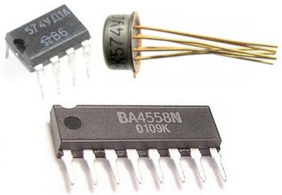
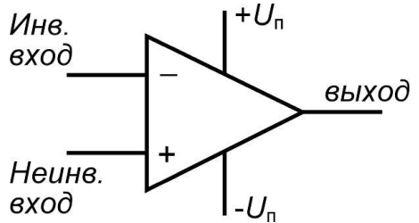
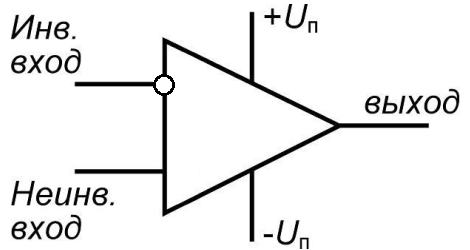
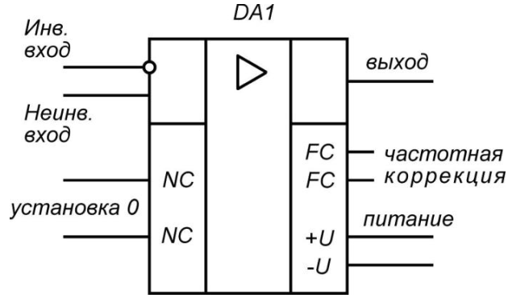
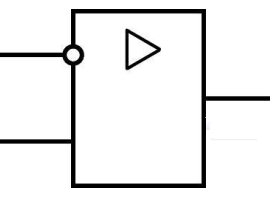
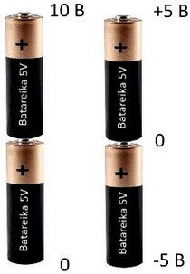
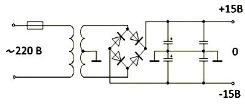
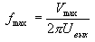

Операционные усилители
Операционные усилители (ОУ) являются одними из основных компонентов в современных аналоговых электронных устройствах. Благодаря простоте расчетов и отличным параметрам, операционные усилители легки в применении. Их также называют дифференциальными усилителями, так как они способны усилить разность входных напряжений. Особенно популярно использование операционных усилителей в звуковой технике, для усиления звучания музыкальных колонок.

Рис. 1 - Микросхемы операционных усилителей
  |
 |
 |
| Устаревшее обозначение ОУ (зарубежное обозначение) |
Обозначение ОУ по ГОСТ 2.759-82 |
Упрощенное обозначение ОУ |
Рис. 2 - Варианты условных графических изображений операционных усилителей
Из корпуса усилителя обычно выходят пять выводов, из которых два вывода – входы, один – выход, остальные два – питание. Есть еще выводы частотной коррекции, хотя последнее встречается все реже - у большинства современных ОУ она встроенная.
Основные свойства ОУ:
- Очень высокое сопротивление входа,
- Очень высокий коэффициент усиления (10000 и более),
- Очень низкое сопротивление выхода.
Принцип действия операционного усилителя
Существуют два правила, помогающие понять принцип действия операционного усилителя:
- Выход операционного усилителя стремится к нулевой разности напряжений на входах.
- Входы усилителя не расходуют ток.
На рисунке 2 обозначены три самых главных вывода ОУ - два входа и выход. Вход обозначеннный «+» называется неинвертирующим, вход обозначен знаком «–» - инвертирующим. Если подать сигнал на инвертирующий вход, то на выходе мы получим инвертированный сигнал, то ест сдвинутый по фазе на 180 градусов - зеркальный; если же подать сигнал на неинвертирующий вход, то на выходе мы получим фазово не измененный сигнал.
Входы усилителя имеют высокое сопротивление, называемое импедансом. Это позволяет расходовать ток на входах в несколько наноампер. На входе происходит оценка величины напряжений. В зависимости от этой оценки усилитель выдает на выход усиленный сигнал.
Большое значение имеет коэффициент усиления, который иногда достигает миллиона. Это означает, что если на вход подать хотя бы 1 милливольт, то на выходе напряжение будет равно величине напряжения источника питания усилителя. Поэтому операционные усилители не применяют без обратной связи.
Входы усилителя действуют по следующему принципу: если напряжение на неинвертирующем входе будет выше напряжения инвертирующего входа, то на выходе окажется наибольшее положительное напряжение. При обратной ситуации на выходе будет наибольшее отрицательное значение.
Отрицательное и положительное напряжение на выходе операционного усилителя возможно из-за использования источника питания, обладающего расщепленным двуполярным напряжением.
Питание операционного усилителя
Если взять пальчиковую батарейку, то у нее два полюса: положительный и отрицательный. Если отрицательный полюс считать за нулевую точку отсчета, то положительный полюс покажет +1,5 В. Это видно по подключенному мультиметру.
Возьмем два элемента и подключим их последовательно.

Рис. 3 - Получение двухполярного питания
Если за нулевую точку принять отрицательный полюс нижней батарейки, а напряжение измерять на положительном полюсе верхней батарейки, то прибор покажет +10 В.
Если за ноль принять среднюю точку между батарейками, то получается источник двуполярного напряжения, так как имеется напряжение положительной и отрицательной полярности, равной соответственно +5 В и -5 В.
Существуют простые схемы блоков с расщепленным питанием.

Рис. 4 - Схема двухполярного источникапитания
Питание на схему подается от бытовой сети. Трансформатор понижает ток до 30 В. Вторичная обмотка в середине имеет ответвление, с помощью которого на выходе получается +15 В и -15 В выпрямленного напряжения.
Основные параметры операционных усилителей
- К – собственный коэффициент усиления ОУ (без обратной связи).
- Uсдв - Выходное напряжение сдвига. Небольшое напряжение, возникающее из-за несимметрии плеч ОУ при нулевом напряжении на обоих входах. Обычно Uсдв имеет значение 10 - 100 мВ.
- Iсм - Входной ток смещения. Ток на входах усилителя, необходимый для работы входного каскада операционного усилителя.
- Iсдв - Входной ток сдвига. Разность токов смещения появляется вследствие неточного согласования входных транзисторов. Iсдв=Iсм1-Iсм2.
- Rвх - Входное сопротивление. Как правило, Rвх имеет значение до 1-10мегаом.
- Rвых - Выходное сопротивление. Определяется отношением изменения выходного напряжения ОУ к соответствующему изменению выходного тока. Обычно Rвых не превосходит сотен Ом.
- Косс - Коэффициент ослабления синфазного сигнала. Характеризует способность ослаблять сигналы, приложенные к обоим входам одновременно.
- vU - Максимальная скорость нарастания выходного напряжения (В/мкс). Характеризует
скорость отклика на ступенчатое воздействие. Определяется по переходной характеристике.
- Uпит - Напряжение питания.
- Ток потребления. Ток покоя, потребляемый операционным усилителем.
- Потребляемая мощность. Мощность, рассеиваемая операционным усилителем.
- Переходная характеристика. Сигнал на выходе усилителя при подаче на его вход скачка напряжения.
- Частота единичного усиления Fmax – это частота, на которой модуль коэффициента усиления ОУ равен единице (0 дБ). Обычно эта частота не превышает нескольких мегагерц.
Максимальная скорость нарастания напряжения на выходе (slew rate) обозначает быстродействие данного ОУ - как быстро он сможет изменить напряжение на выходе при изменение оного на входе. Этот параметр важен прежде всего для товарищей, конструирующих УЗЧ, поскольку, если ОУ недостаточно быстрый, то он не будет успевать за входным напряжением на высоких частотах и возникнут изрядные нелинейные искажения. У большинства современных ОУ общего назначения скорость нарастания сигнала от 10 В/мкс и выше. У быстродействующих ОУ этот параметр может достигать значения 1000 В/мкс. Оценить - подходит ли тот или иной ОУ для ваших целей по скорости нарастания Vmaxсигнала можно по формуле:

где
fmax - частота синусоидального сигнала,
Uвых - максимальное выходное напряжение.
Типовые схемы включения операционных усилителей
Источники
electrosam.ru - Операционные усилители. Виды и принцип действия. Питание